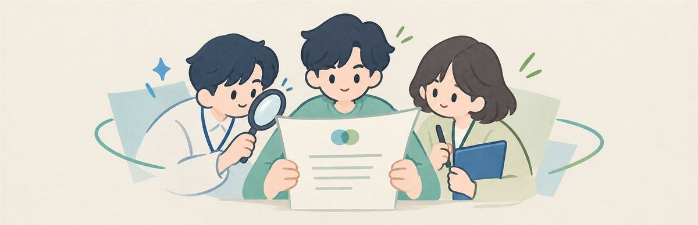
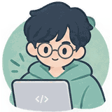
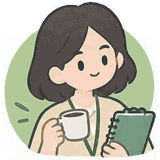
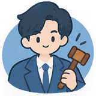

한눈 · 한 글을 여러 눈으로 읽어봅니다
내 자기소개서, 세 사람은 어떻게 읽을까요?
이렇게 진행돼요
- 분석가가 첫인상을 읽어요어떤 어조로 읽히는지, 그 인상을 만든 문장은 무엇인지


평가자 3명이 각자 평가해요채용 담당자 · 기술 전문가 · 비개발 직군 면접관이 서로 보지 않고 읽어요
의장이 무엇부터 고칠지 정리해요판정이 갈린 문장과 고칠 방법까지
공개 데모에서는 미리 분석해 둔 샘플만 볼 수 있어요. 무료 AI 한도가 작고, 넣은 글이 외부 AI 서비스로 전송되기 때문이에요. 내 글은 코드를 받아 내 컴퓨터에서 분석할 수 있어요.
0자
샘플로 해보기
모두 지어낸 글이에요이런 결과를 받아요
샘플 01 결과 · 누르면 그 장으로분석 결과는 글이 이렇게 읽힌다는 인상이지, 작성자의 역량이나 성격을 판단한 것이 아니에요. · 코드 보기 · 만든 사람의 포트폴리오(행로)